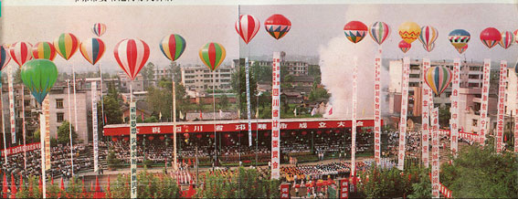
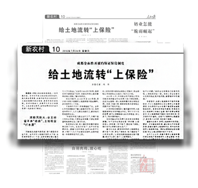

2018
时光隧道开启中...
时光隧道开启中...
邛崃开启
农业生产责任制试点
农业生产责任制试点
中共邛崃县委在前进、桑园两个公社进行“建立分组作业，三统一包，联产计酬，增产分成”试点工作。
开启农工商综合经营之路
前进公社凤凰大队成立邛崃县凤凰农工商联合企业，全县先后43个大队（村）走上农工商综合经营之路。

开启农村经济体制改革试点
正式确定邛崃县为四川省农村经济体制改革试点县。
入选全国重点文物保护单位
十方堂邛窑遗址和唐代民居建筑被国务院批准为全国重点文物保护单位。
原中共中央总书记胡耀邦
视察工作路经邛崃
视察工作路经邛崃
为邛崃县委题写“团结奋斗，再展宏图”八字条幅。

玉溪河引水灌溉枢纽工程
建设成功
建设成功

入选全国县级机构
改革试点县
改革试点县
高河乡农民王静池制作的
向亚运会献礼的大型根雕
《龙争虎斗》
被亚运会组委会收藏展出
向亚运会献礼的大型根雕
《龙争虎斗》
被亚运会组委会收藏展出
全国县级机构改革试点
工作座谈会在邛崃县召开
工作座谈会在邛崃县召开
国家机构编委会主持会议，全国9个机构改革试点县负责人和四川省、成都市领导参会。
获批历史文化名城
邛崃被列为四川省首批省级历史文化名城。

国家农业部认定为
国家级杂交水稻生产基地
国家级杂交水稻生产基地
中共中央政治局委员
中共四川省委书记
杨汝岱视察邛崃
中共四川省委书记
杨汝岱视察邛崃
肯定邛崃在综合体制改革、机构改革和完善农业社会化服务体系等方面工作成效。
中共邛崃县委书记何琼英
出席全国机构改革试点县汇报会
出席全国机构改革试点县汇报会
文君酒厂被中商部列入1991年
中国500家最佳经济效益工业企业。
中国500家最佳经济效益工业企业。

撤县设市
撤销邛崃县，设立邛崃市(县级)，由省直辖，成都市代管。

入选全国第一批商品粮基地
邛崃被列入“九五”全国第一批商品粮基地。
荣获成都平原经济圈先进市
从1994年开始，连续5年进入平原类先进市（县）。
荣获“中国最大白酒
原酒基地”铜牌
原酒基地”铜牌
10万干部群众汇聚东星大道，参加2000邛酒节暨邛酒飘香神州壮行会。
天台山被批准为
第五批国家重点风景名胜区
第五批国家重点风景名胜区

平乐镇被国家环保总局
授予“全国环境优美镇”称号
授予“全国环境优美镇”称号

荣获“2005全国县城视频
经济发展示范县（县级市）”称号
经济发展示范县（县级市）”称号
国家旅游局授予成都
“中国农家乐发源地”称号
“中国农家乐发源地”称号
邛崃平乐镇花秋村等五大旅游景点，被列为成都市“五朵金花”旅游品牌。
天台山入选
世界自然遗产名录
世界自然遗产名录

第十届亚洲跳伞锦标赛
暨国际跳伞公开赛在邛崃举行
暨国际跳伞公开赛在邛崃举行
来自15个国家和地区的16支代表队、230名运动员、教练员参加比赛。

国家旅游局命名邛崃为
“中国优秀旅游城市”
“中国优秀旅游城市”

登上《新闻联播》头条
“四川·邛崃：新型农村集体组织助农增收”在《新闻联播》的头条播放。
“邛崃模式”——农民分享
土地流转收益，荣获中国“十大改革探索”评选活动第三名
土地流转收益，荣获中国“十大改革探索”评选活动第三名
邛崃
“竹麻号子”“瓷胎竹编”
列入第二批国家级非物质文化遗产保护名录
“竹麻号子”“瓷胎竹编”
列入第二批国家级非物质文化遗产保护名录


文化部命名平乐镇（竹编）和固驿镇（川剧）为首批“中国民间文化艺术之乡”
省政府认定邛崃为革命老区市（县）
国家工商总局认定“花秋”商标为中国驰名品牌
邛崃实现中国驰名商标“零突破”。

花秋茶叶、文君茶叶
入选中国茶叶行业百强企业名单
入选中国茶叶行业百强企业名单

国家质检总局批准对邛酒实施地理标志产品保护

芦山地震灾后重建
面对灾害，邛崃市立即启动应急预案，灾后恢复重建全面推进。

央视10套《探索·发现》
连续播出邛窑专题片《神秘的邛窑》
连续播出邛窑专题片《神秘的邛窑》
向全国电视观众揭开邛窑神秘的面纱。

荷兰阿克苏·诺贝尔公司
和英国太古集团在羊安工业园区投资共建阿克苏诺贝尔装饰漆生产基地
和英国太古集团在羊安工业园区投资共建阿克苏诺贝尔装饰漆生产基地
“邛崃黑茶”、“邛崃黑猪”被国家质检总局授予国家地理标志保护产品


制定出台《邛崃市农村土地流转风险防范机制实施意见》
引入土地流转履约保证保险，进一步探索以市场化方式破解农村土地流转风险。

被授予“国家生态市”称号
天邛产业合作园签约
邛崃市人民政府与天府新区成都管委会签约共建天府新区天邛产业合作园。

羊安工业园区更名为天府新区邛崃产业园区
更多的新兴产业落地邛崃
包括投资140亿元的融捷新能源产业项目、35亿威高医疗装备产业园项目、100亿成都临邛文博创意产业示范区项目、60亿元的比亚迪云巴示范线项目、30亿元的水井坊邛崃全产业链基地项目和32亿元的休斯卫星终端制造……

1978 - 2018